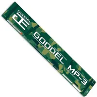
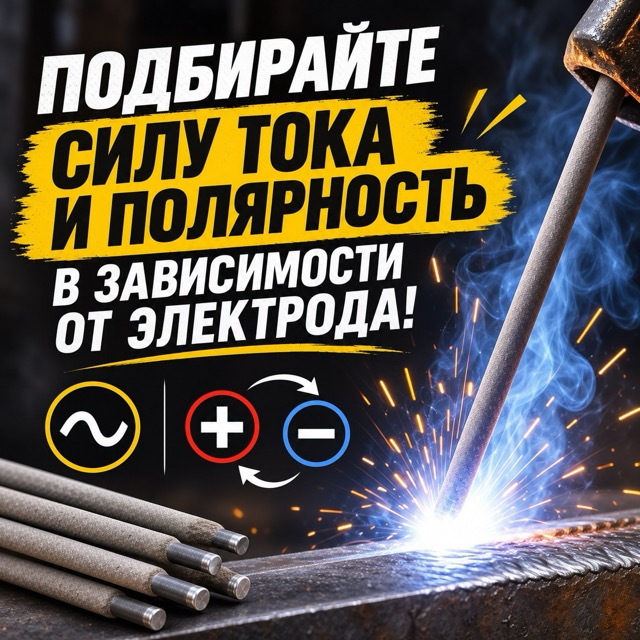

Популярные универсальные электроды для низкоуглеродистой стали
Особенности
Листайте для просмотра всех особенностей

Рутиловое покрытие
Даёт стабильную дугу, аккуратный мелкочешуйчатый шов и малое разбрызгивание. Шлаковая корка легко отделяется.
Дуга зажигается с первого касания и легко возобновляется, что удобно для прихваток, коротких швов и работы начинающих.

Ток и полярность
Переменный ток или постоянный ток обратной полярности. Напряжение холостого хода источника — от 50 В.
ПодходитУглеродистые конструкционные стали обыкновенного качества — Ст1, Ст2, Ст3 (кп, пс, сп); качественные углеродистые стали — марки 08, 10, 15, 20; низколегированные стали при неответственных швах — 09Г2, 09Г2С.
Не подходитВысоколегированные и нержавеющие стали, чугун, цветные металлы и их сплавы. Не рекомендуются для особо ответственных конструкций и для работы при низких температурах — для них лучше электроды с основным покрытием (например, УОНИ-13/55).
Что это за электроды
МР-3 — одна из самых распространённых марок электродов с рутиловым покрытием для ручной дуговой сварки низкоуглеродистых и низколегированных сталей. По ГОСТ 9467-75 относятся к типу Э46: прочность наплавленного металла не ниже 450 МПа.
Это «рабочая лошадка» для строительства, ремонта и бытовых задач: с ними просто работать, они не требуют дорогого оборудования и хорошо прощают неидеальную подготовку кромок.
Основные плюсы
Стабильная дуга и мягкое зажигание, в том числе повторное;
малое разбрызгивание и лёгкая отбивка шлака;
аккуратное формирование шва во всех положениях, кроме вертикального сверху вниз;
работа на переменном и постоянном токе;
допускают сварку по слегка ржавым и загрязнённым кромкам;
доступная цена и широкий выбор диаметров.
Основные ограничения
Рутиловое покрытие даёт больше водорода в шве, чем основное, поэтому для особо ответственных конструкций и работы в мороз такие электроды не рекомендуются.
Не подходят для нержавеющих сталей, чугуна и цветных металлов. Отсыревшие электроды дают пористый шов — их нужно просушить.
Где применяют
Изготовление каркасов, рам, ограждений, ворот, навесов и теплиц;
монтаж и ремонт металлоконструкций общего назначения;
сварка труб отопления и водоснабжения в неответственных соединениях;
ремонт сельхозтехники, гаражные и бытовые работы.
Средние характеристики
Тип по ГОСТ 9467-75Э46
ПокрытиеРутиловое (Р)
Предел прочности≥ 450 МПа
Относительное удлинение≥ 22%
Ударная вязкость KCU≈ 130–150 Дж/см²
Напряжение холостого ходаот 50 В
Род тока~ или = (обратная полярность)
Положения сваркиВсе, кроме вертикального сверху вниз
Расход на 1 кг наплавки≈ 1,6–1,7 кг
Просушка150–180 °C, 40–60 мин
Диаметры и сварочный ток
Ø 2,5 мм — 60–90 АØ 3 мм — 80–130 АØ 4 мм — 130–190 АØ 5 мм — 170–240 А